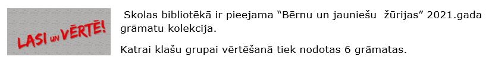

Bibliotēka
"Grāmatas - domu laivas, kas peld laika viļņos
un saudzīgi nes savu dārgo kravu no paaudzes uz paaudzi."
F. Bēkons
Garkalnes MVP bibliotēkā abonētie periodiskie izdevumi 2024.gadam
Leģendas, Ilustrētā Pasaules Vēsture, Ilustrētā Junioriem, Avene, Avenīte, Mūzikas Saule
Bērnu un jauniešu žūrija 2023

Grāmatu saraksts
Bērnu un jauniešu žūrija 2022

Grāmatu saraksts
Bērnu un jauniešu žūrija 2021
Grāmatu saraksts
Bērnu un jauniešu žūrija 2015
Sākusies pieteikšanās „Bērnu un jauniešu žūrijai 2015”. Katrai klašu grupai vērtēšanā tiek nodotas 6 grāmatas, bet vecāki varēs vērtēt 4 grāmatas. Grāmatu saraksts
Grāmatu saraksts
Bērnu un jauniešu žūrija 2014
Sākusies „Bērnu un jauniešu žūrija 2014”. Ir zināmas grāmatas, kuras ietilpst jaunajā žūrijas kolekcijā. Katrai klašu grupai vērtēšanā tiek nodotas 5 grāmatas, bet vecāki varēs vērtēt 4 grāmatas.
Grāmatu sarakstsBērnu un jauniešu žūrija 2013
Šogad „Bērnu un jauniešu žūrija” sākas jau vasarā. Katrai klašu grupai vērtēšanā tiek nodotas 6 grāmatas, bet vecāki varēs vērtēt 5 grāmatas.
Grāmatu saraksts1.martā, Ķīpsalā, ar "Lielajiem lasīšanas svētkiem" noslēdzās lasīšanas veicināšanas programma "Bērnu un jauniešu žūrija 2013". Žūrija ir nominējusi un noteikusi 2013.gada populārākās bērnu grāmatas, to autorus un izdevējus.
Grāmatu vērtēšanas rezultāti pa vecuma grupām
Bērnu un jauniešu žūrija 2014
Garkalnes MVP bibliotēkas lietošanas noteikumi
1. Vispārīgie noteikumi
1.1. Šie noteikumi nosaka Garkalnes MVP bibliotēkas (turpmāk – bibliotēka) pakalpojumu sniegšanas kārtību lietotājiem, lietotāju tiesības un pienākumus, kā arī citus ar bibliotēkas lietošanu saistītus jautājumus.
1.2. Bibliotēkas lietotāja tiesības un pienākumus nosaka Latvijas Republikas likumi un citi normatīvie akti, Garkalnes MVP bibliotēkas reglaments un Garkalnes MVP lietošanas noteikumi.
2. Bibliotēkas lietotāju reģistrācijas kārtība
2.1. Skolas bibliotēka apkalpo Garkalnes MVP skolēnus, skolotājus un skolas darbiniekus.
3. Bibliotēkas lietotāju tiesības
3.1. Izmantot bibliotēkas sniegtos pakalpojumus bez maksas.
3.2. Iepazīties ar bibliotēkas izmantošanas noteikumiem.
3.3. Izmantot lasītavā jebkuru bibliotēkā esošo iespieddarbu.
4. Bibliotēkas lietotāja pienākumi
4.1. Bibliotēkā nedrīkst ienākt ar virsdrēbēm.
4.2. Bibliotēkā aizliegts ienest un lietot ēdienus un dzērienus.
4.3. Jebkurai personai, kas atrodas bibliotēkas telpās, jāievēro vispārējie uzvedības noteikumi: sarunas, troksnis un cita veida darbības, kas var būt traucējošas pārējiem lasītājiem, jāierobežo līdz minimumam.
4.4. Lasītāji drīkst iznest no bibliotēkas tikai pie bibliotekāra reģistrētas grāmatas vai citus krājuma materiālus.
4.5. Lietotājs nedrīkst bojāt bibliotēkas fondu, inventāru, iekārtas vai nodarīt citus materiālos zaudējumus.
4.6. Saudzēt bibliotēkas grāmatas un citus krājuma materiālus. Ja grāmata tīšām sabojāta, tās vietā iegādājama jauna grāmata vai jauna līdzvērtīga grāmata, par to vienojoties ar bibliotekāru.
4.7. Lasītavā izmantoto literatūru nenovietot atpakaļ plauktos, bet nodot bibliotekāram.
4.8. Ievērot noteiktos grāmatu atdošanas termiņus.
4.9. Bibliotēkas lietotāju, kurš neievēro bibliotēkas lietošanas noteikumus, ļaunprātīgi traucē darbu citiem lietotājiem vai bibliotēkas darbiniekam, var izraidīt no bibliotēkas telpām.
5. Grāmatu lietošanas termiņi
5.1. Pamatfonda grāmatas izsniedz uz 2 nedēļām.
5.2. Īpaši pieprasītu pamatfondu materiālu izsniegšanas termiņš var tikt samazināts, par to brīdina bibliotekārs, izsniedzot attiecīgo krājuma vienību.
5.3. Lasītājiem jāievēro grāmatu izmantošanas termiņš, nepieciešamības gadījumā tas savlaicīgi jāpagarina.
5.4. Enciklopēdijas, vārdnīcas, retas un vērtīgas grāmatas iespējams izmantot tikai bibliotēkas lasītavā.
5.5. Mācību gada noslēgumā vai izstājoties no skolas visas saņemtās grāmatas ir jānodod skolas bibliotēkā.
5.6. Lietošanas termiņu neievērošanas gadījumā parādniekiem var tikt liegta jaunu krājuma vienību saņemšana līdz parādu nokārtošanai, vai uz laiku atļaut krājuma vienības lietot tikai lasītavā.
No 2000. gada līdz 2013. gadam Garkalnes skolas telpās darbojās arī Garkalnes novada Domes kultūras, informācijas un izglītības iestāde – bibliotēka (apvienotā novada un skolas bibliotēka).
Pirmās ziņas par Garkalnes ciema bibliotēku rodamas Rīgas apriņķa Ādažu pagasta Garkalnes ciema darbaļaužu deputātu Padomes izpildu komitejas 3. sesijas 1949. gada 21. marta Protokolā Nr. 14. Bibliotekāre Olga Pozņaka.
Kopš 2015.gada bibliotēka atrodas Vidzemes šosejā 33b.